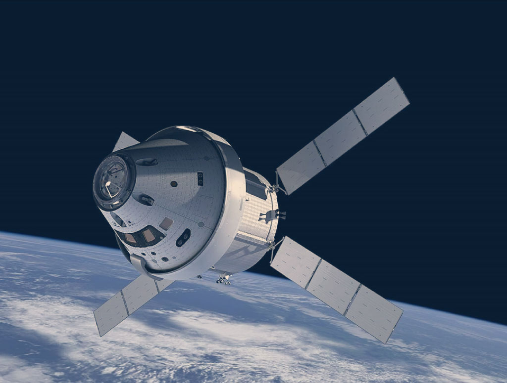

Researching new
information for SkyDipper
VIZZUALITY llevará a cabo un proyecto estratégico de desarrollo de una nueva plataforma de adquisición y procesado de cantidades masivas de datos sobre medio ambiente a nivel global mediante el uso de técnicas Deep Learning para su posterior visualización.